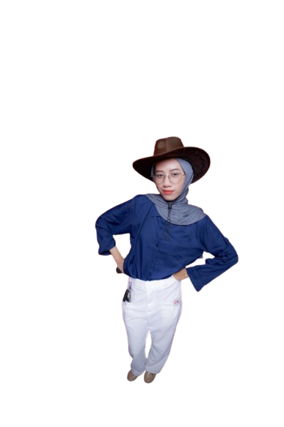

Cerita di Balik Aroma
Mengenal POUR Coffee: dari mana kami berasal dan apa yang kami percaya.

Siapa Kami
POUR Coffee berdiri pada tahun 2024 di Serang, Banten, dengan satu tujuan sederhana: menyajikan kopi lokal berkualitas dalam suasana yang hangat. Kami bekerja sama langsung dengan petani agar rasa kopi terjaga dan kesejahteraan petani ikut terangkat.
Setiap cangkir diracik oleh barista terlatih, karena bagi kami kopi bukan sekadar minuman, tetapi cerita yang dibagikan.
Visi
Menjadi coffee shop pilihan yang menghadirkan kopi lokal terbaik dan ruang berkumpul yang menginspirasi.
Misi
- Menggunakan biji kopi lokal berkualitas.
- Memberikan pelayanan ramah dan cepat.
- Menyediakan tempat nyaman untuk bekerja dan bersosialisasi.
- Mendukung petani dan UMKM lokal.
Perjalanan Kami
- 2024POUR Coffee dibuka dengan 5 menu andalan.
- 2025Menambah menu signature dan area kerja bersama.
- 2026Layanan pesan online dan delivery dimulai.